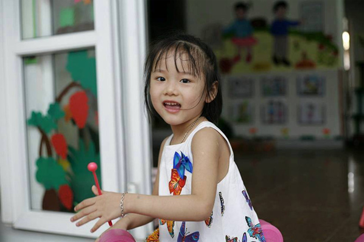

Trong căn nhà cấp 4 nằm ở thôn Tân Mỹ (quận Nam Từ Liêm, Hà Nội), cuộc sống của gia đình 1 tuần sau khi em bé Hải An ra đi, hình như không có bất kỳ sự xáo trộn nào. Đến bữa cơm, mọi người vẫn gọi: "An ơi, ăn cơm thôi con!". Trời tối khuya, chị Dương thắp cho con gái 3 nén hương rồi thì thào: "An ơi, hôm nay không có thịt xiên nướng. Ngày mai mẹ mua cho con nhé!".
Anh Trung (bác ruột bé) vừa nhâm nhi chén rượu vừa thủ thỉ: "Em có thấy căn nhà này toàn "người điên" không? Nhiều người đi đường nhìn vào nhà thỉnh thoảng nghe thấy tiếng độc thoại, nhưng chính là đang nói chuyện với An đó. Tụi anh chưa quen, chưa thể quen và có lẽ phải cần một thời gian nữa mới chấp nhận được sự thật này".

Trong căn nhà cấp 4 nằm ở thôn Tân Mỹ (quận Nam Từ Liêm, Hà Nội), cuộc sống của gia đình 1 tuần sau khi em bé Hải An ra đi, hình như không có bất kỳ sự xáo trộn nào. Đến bữa cơm, mọi người vẫn gọi: "An ơi, ăn cơm thôi con!". Trời tối khuya, chị Dương thắp cho con gái 3 nén hương rồi thì thào: "An ơi, hôm nay không có thịt xiên nướng. Ngày mai mẹ mua cho con nhé!".
Anh Trung (bác ruột bé) vừa nhâm nhi chén rượu vừa thủ thỉ: "Em có thấy căn nhà này toàn "người điên" không? Nhiều người đi đường nhìn vào nhà thỉnh thoảng nghe thấy tiếng độc thoại, nhưng chính là đang nói chuyện với An đó. Tụi anh chưa quen, chưa thể quen và có lẽ phải cần một thời gian nữa mới chấp nhận được sự thật này".
Năm tháng tuổi thơ của An tràn ngập những bức ảnh do chính tay chị Dương chụp. Cứ lướt qua 5 bức lại có 2, 3 bức bé An dán miếng hạ sốt trên trán.
"Em thấy chị có hâm không, chụp từng khoảnh khắc của con mà không biết chán. Nhưng mà giờ nhìn lại thấy con ốm đau suốt từ bé mà xót lắm...".
Bé An lớn lên trong tình thương vô bờ bến của mẹ và bố, nhưng có lẽ người đồng hành cùng con đến tận giờ phút cuối cùng là mẹ em. Lướt qua tấm ảnh mà theo tôi là xúc động nhất trong cả hành trình - khung hình bé An ra đi trong vòng tay của mẹ - chị Dương khóc: "Chị đâu có chịu được nỗi đau ấy. Con ra đi nhẹ nhàng nhưng chị chỉ biết gào lên thôi".
"Con em bây giờ tính ngày hay tính tháng?" Ngày hai mẹ con đưa nhau đi từ bệnh viện Việt Đức, sang viện K rồi Bạch Mai với tờ xét nghiệm trên tay, tất cả đều chung một kết quả: Hải An bị u não, khối u hiện đã chèn lên dây thần kinh nên y học không thể can thiệp được.
Sau khi hội chẩn, các bác sĩ tại bệnh viện Bạch Mai đã tức tốc gọi mẹ bé Hải An vào gặp riêng, đưa ra đề xuất thực hiện các thủ thuật xạ trị để kéo dài thời gian sống cho bé. Nhưng An chỉ mới 7 tuổi, xạ trị với em khi đó quá nguy hiểm. Năm tháng tuổi thơ của An tràn ngập những bức ảnh do chính tay chị Dương chụp. Cứ lướt qua 5 bức lại có 2, 3 bức bé An dán miếng hạ sốt trên trán.
"Em thấy chị có hâm không, chụp từng khoảnh khắc của con mà không biết chán. Nhưng mà giờ nhìn lại thấy con ốm đau suốt từ bé mà xót lắm...".
Bé An lớn lên trong tình thương vô bờ bến của mẹ và bố, nhưng có lẽ người đồng hành cùng con đến tận giờ phút cuối cùng là mẹ em. Lướt qua tấm ảnh mà theo tôi là xúc động nhất trong cả hành trình - khung hình bé An ra đi trong vòng tay của mẹ - chị Dương khóc: "Chị đâu có chịu được nỗi đau ấy. Con ra đi nhẹ nhàng nhưng chị chỉ biết gào lên thôi".
"Con em bây giờ tính ngày hay tính tháng?" Ngày hai mẹ con đưa nhau đi từ bệnh viện Việt Đức, sang viện K rồi Bạch Mai với tờ xét nghiệm trên tay, tất cả đều chung một kết quả: Hải An bị u não, khối u hiện đã chèn lên dây thần kinh nên y học không thể can thiệp được.


Gửi bình luận
Gửi ý kiến
(3) Bình luận
Xếp theo: Thời gian Số người thích